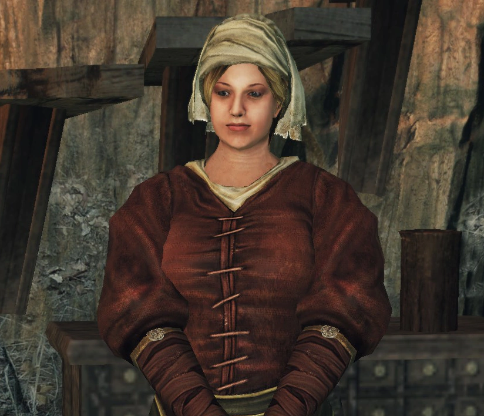

Милибет
Описание
Домохозяйка и горничная, которая живет с тремя Хранительницами Огня в Междумирье. Предоставляет общую информацию о себе и пожилых женщинах, о которых она заботится.

Примечания
После победы над двумя ограми на пляже возле гроба и одного около водопада, даст протагонисту награду — половник служанки.
Если напасть на неё или на Хранительниц Огня, атакует игрока этим же половником.
После убийства с неё падают 3 человеческие фигурки.
Её дух можно воскресить за 1,000 душ у надгробия перед домом.
После убийства или атаки Милибет, старухи не будут с вами разговаривать и возможность поменять свои характеристики при помощи Сосуда Души будет недоступна. Единственный способ вернуть эту возможность — получить прощение грехов у Кромвеля.